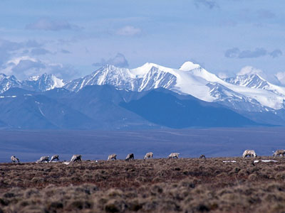
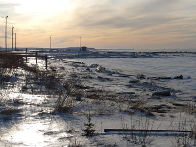

.jpg){kind=link}
Alaska Bush Travel Guide
Regions of Alaska not connected to the North American road network or does not have ready access to the state's ferry system
Places to See in Alaska Bush

Jeff P from Berkeley, CA, USA, CC BY 2.0, via Wikimedia Commons; Image Size Adjusted
.jpg){kind=link}
Arctic National Wildlife Refuge
Wildlife refuge in northeastern Alaska, is the largest national wildlife refuge in the country, and includes a large variety of species of plants and animals, such as polar bears, grizzly bears, black bears, moose, caribou, and wolves

Jeff P from Berkeley, CA, USA, CC BY 2.0, via Wikimedia Commons; Image Size Adjusted
Bethel
Largest city in western Alaska and the largest community on the Kuskokwim River
Jeff P from Berkeley, CA, USA, CC BY 2.0, via Wikimedia Commons; Image Size Adjusted
Dalton Highway
414-mile (666 km) road in Alaska beginning north of Fairbanks, and ending near the Arctic Ocean and the Prudhoe Bay Oil Fields, was built as a supply road to support the Trans-Alaska Pipeline System in 1974

Jeff P from Berkeley, CA, USA, CC BY 2.0, via Wikimedia Commons; Image Size Adjusted
Dillingham
City in southwestern Alaska and is an important commercial fishing port on Nushagak Bay

Jeff P from Berkeley, CA, USA, CC BY 2.0, via Wikimedia Commons; Image Size Adjusted
Gates of the Arctic National Park and Preserve
Northernmost national park in the United States, situated entirely north of the Arctic Circle, the park is the second largest in the US
-400.jpg)
Jeff P from Berkeley, CA, USA, CC BY 2.0, via Wikimedia Commons; Image Size Adjusted
Kobuk Valley National Park
National park in the Arctic region of northwestern Alaska, located about 25 miles (40 km) north of the Arctic Circle, was designated to preserve the 100 ft (30 m) high Great Kobuk Sand Dunes and the surrounding area which includes caribou migration routes

Jeff P from Berkeley, CA, USA, CC BY 2.0, via Wikimedia Commons; Image Size Adjusted
Kotzebue
City 33 miles (53 km) north of the Arctic Circle on Alaska's western coast is a gateway to Kobuk Valley National Park and other natural attractions

Jeff P from Berkeley, CA, USA, CC BY 2.0, via Wikimedia Commons; Image Size Adjusted
Nome
Located on the southern Seward Peninsula coast on Norton Sound of the Bering Sea, Nome was once the most-populous city in Alaska

Jeff P from Berkeley, CA, USA, CC BY 2.0, via Wikimedia Commons; Image Size Adjusted
Utqiagvik / Barrow
Known as Barrow from 1901 to 2016 and located north of the Arctic Circle, Utqiaġvik is one of the northernmost cities in the world and the northernmost in the United States
Overview
The Bush is the Alaskan term for the huge part of the state that is off the road system and ferry network, including most of the Arctic, western, and interior communities. Travelers come for true wilderness, the Arctic Ocean, the midnight sun and northern lights, and a chance to experience Alaska Native cultures in places few visitors reach.
You reach the Bush by small plane, boat, or the few long gravel roads such as the Dalton Highway, the road to the Arctic Ocean. Highlights include Gates of the Arctic, Kobuk Valley, and the Arctic National Wildlife Refuge, as well as wildlife viewing, fishing, river trips, and the Iditarod finish in Nome.
Geography
The Bush covers most of Alaska’s land area and includes the Arctic Coastal Plain, the Brooks Range, the Seward Peninsula, the Yukon–Kuskokwim Delta, and the Bering Sea coast. Much of the far north lies above the Arctic Circle and is underlain by permafrost, with tundra, braided rivers, and a few boreal forests in the south. Communities are separated by long distances with no roads between them, so air travel is the main link.
History
Iñupiat, Yup’ik, Cup’ik, Athabascan, and other Alaska Native peoples have lived in this region for thousands of years, hunting, fishing, and gathering across the tundra and sea ice. Russia explored the coast in the 1700s, and the United States bought Alaska in 1867. The 1898 gold rush brought thousands of prospectors to Nome. In 1971 the Alaska Native Claims Settlement Act created regional and village corporations that still own much of the land, and oil from Prudhoe Bay began flowing south in 1977.
Cities and Towns
Utqiaġvik is the northernmost city in the United States, with the midnight sun in summer and polar night in winter. Nome is the end of the Iditarod and keeps its gold rush heritage, while Kotzebue, Bethel, and Dillingham are regional hubs and gateways to the national parks and rivers.
National Protected Areas
Gates of the Arctic National Park and Preserve has no roads or trails, and Kobuk Valley National Park is known for the Great Kobuk Sand Dunes and the caribou migration. Noatak National Preserve, Bering Land Bridge National Preserve, and Cape Krusenstern National Monument protect remote tundra and coastal sites, and the Arctic National Wildlife Refuge protects caribou calving grounds and polar bear habitat.
State Parks and Historic Sites
State parks are few in the Bush because of its size and remoteness. Visitors to the region instead focus on cultural and historic sites, such as the Iñupiat Heritage Center in Utqiaġvik, the NANA Museum of the Arctic in Kotzebue, the Yup’ik cultural museum in Bethel, and the gold-rush dredges and Iditarod finish in Nome. The Dalton Highway corridor, which follows the Trans-Alaska Pipeline, is the main road-accessible route.
Seasons and Best Time to Visit
Summer, from June through August, is the main season, with nearly 24 hours of daylight, warm days, and the best flying weather and river trips. Late August and September bring autumn tundra colors and the start of northern lights season, which runs into April. Winter is long, dark, and extremely cold, with the Iditarod in March, snowmachining, and dog mushing, and travel can be disrupted by storms. Spring thaw and breakup in May can make some travel difficult.
This article uses material from the Wikipedia article "The Bush (Alaska)", which is released under the Creative Commons Attribution-Share-Alike License 3.0. Additional information is from the National Park Service pages for Gates of the Arctic National Park and Preserve and Kobuk Valley National Park, the U.S. Fish and Wildlife Service Arctic National Wildlife Refuge page, and Travel Alaska.